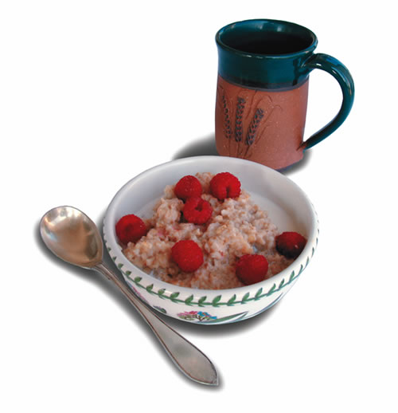
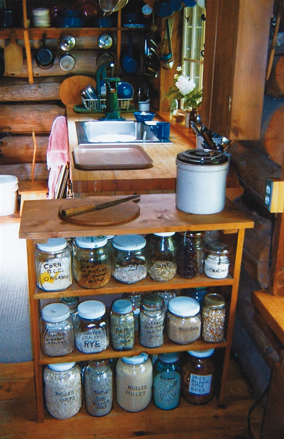

We have heard a lot lately about the importance of whole grains in our diet-even the U.S. Department of Agriculture has come to this conclusion. Of course, many of us already knew this.
My wife, Mitzie, and I raised our four children on a small, self-sufficient homestead in Massachusetts. We discovered that breakfast was the best time to get whole grains into our diet. We love old-fashioned rolled oats, but not every day; so we have come up with a concept that organizes and simplifies preparing breakfast, and gives us a large variety from which to choose.
We have a dozen or more kinds of whole grains in tightly sealed wide-mouth jars arranged on our kitchen shelves, placed out of the sun to keep the grains fresher. From these jars we concoct new combinations to our hearts’ content.
We always purchase quality whole grains, avoiding processed products that have lost their goodness. We think certified organic is the way to go. Cracked and toasted wheat, rye and barley berries are flavor enhancers when mixed with other grains. Corn is another favorite of ours, both whole and ground into meal. The two corns mixed together create a thick, creamy cereal.
Other jars on our shelves contain dried fruits such as raisins, apples, pears and strawberries. Dried Jerusalem artichokes are a great sweetener; we shred and dry them for this purpose. Sunflower seeds or nuts can be added to any cereal. We also sprinkle brewer’s yeast onto the cereal at serving time.
Toasted grains are a bit time consuming to prepare, but our method is fairly simple and worth the time. First, the whole grains are run through a grain mill to crack the outer shell. We use our 30-year-old Corona hand-crank mill, setting the adjustment as coarse as possible. Two quarts is a good amount to mill at one time-so it can be used before losing its freshness. Toast the cracked grain in a hot and dry cast-iron skillet, stirring constantly to keep the grain from burning. You want it to be slightly toasted-the grain will start popping and give off a nutty aroma. Remove the skillet to a rack to cool, and stir a bit longer to make sure the grain does not burn, because cast iron stays hot for a long time. After the grain cools completely, store it in a jar with a tight lid and a label.
Parched corn also is easy to make. Harvest mature, fresh corn right from the garden and blanch it in boiling water. While still hot, cut the kernels off the cob, spread them on a cookie sheet and place in a 110- to 120-degree oven for 12 to 16 hours; stir the kernels and rotate the pans occasionally. The parched corn, when cooled and stored in tight jars, will keep a long time; and when reconstituted into cornmeal porridge, it tastes out of this world.
Most of our cereals are cooked in a ratio of 2-to-1; so a batch for two people would be 1 cup of water to one-half cup of grain mixture. Here are four of our favorite combinations:
• 1/4 cup cracked barley and 1/4 cup toasted cracked whole wheat
• 1/4 cup rice, 1/4 cup toasted cracked whole wheat and 1 teaspoon shredded/dried Jerusalem artichokes
• 1/4 cup millet, 1/4 cup toasted cracked rye and 1 tablespoon buckwheat
• 1/4 cup quinoa, 1/4 cup toasted cracked rye and 1 teaspoon brewer’s yeast
Corn porridge is our favorite; the measurements are a little different:
1 cup water
1/3 cup corn meal
2 tablespoons parched corn
1 teaspoon pastry flour?
Don’t forget good old-fashioned rolled oats with lots of raisins, or maybe applesauce stirred in at serving time.
Bob Langevin and his wife, Mitzie, live in Chesterville, Maine. They live in a log house built from hemlock trees harvested from their 100-acre woodlot.
|
 Labeled jars of whole and roasted-cracked grains are within easy reach for making tasty, wholesome breakfast cereals. |
 |
|